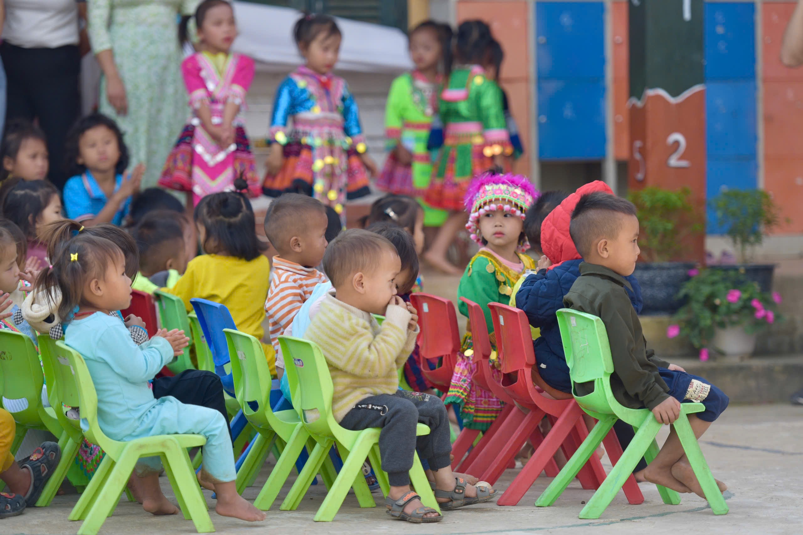

Ba Dinh Cares
- Member -
A 2300+ followers charity organization that has been supporting vulnerable children in remote areas for over 10 years through on-site volunteer trips and direct assistance programs.

During my field missions to Điện Biên and Sơn La, I contributed to school construction projects and helped organize interactive activities for local children. Working closely with volunteers and community members, I coordinated logistics, distributed school supplies, and facilitated meaningful interactions — from organizing games to simply sitting down and chatting with the children to ensure the effective implementation of charitable initiatives.
Cảm nhận kết nối với học sinh.
Volunteering in remote mountainous areas offered me a
deeply moving and eye-opening experience. As our old pickup rattled along rugged dirt roads,
I witnessed scenes that left a lasting imprint on me — children with bare feet, wrapped in thin clothes, shivering in the cold, their futures flickering as delicately as a dying flame. In those moments, I realized that what these children needed wasn't a miracle, but someone who cared enough to listen, act, and
bring warmth — both physically and emotionally
That realization sparked something in me: a desire to use communication as a force for empathy and change, connecting underserved communities with the resources, knowledge, and attention they deserve. This experience reaffirmed my commitment to pursue a future in Professional Communication, where I can create meaningful narratives that not only raise awareness but also mobilize real-world impact.